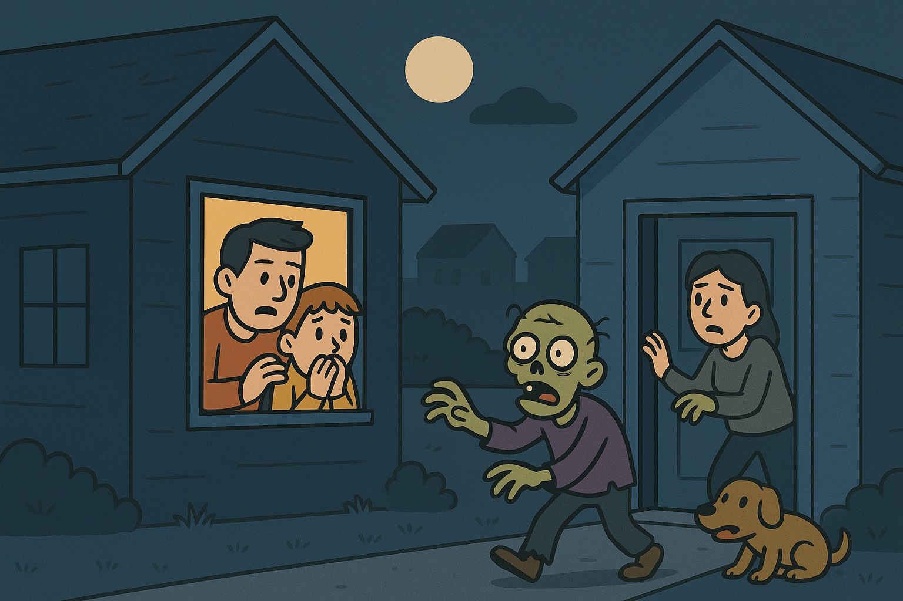

BREAKING NEWS: ZOMBIEALARM UDLYST – BORGMESTEREN OPFORDRER TIL RO
“Eksperter: ‘De er ikke farlige – bare forfærdeligt højlydte.’”
Teaser
Hvad gør man, hvis man har været i kontakt med en alarm-zombie?
Se mere
1. Træk dig til et roligt område Alarm-zombier går ofte i stå,
når de ikke længere har nogen “publikumseffekt”. Fjern dig
roligt og uden panik.
2. Ryst støjen af Hvis zombien har bip- eller sirene-rester
hængende i tøjet (det sker!), ryst det af som støv. Lydene
sætter sig ikke fast.
3. Tjek dig selv for “alarm-aktivering” Hvis du pludselig
begynder at sige bip, wupwup, wee-wee, eller føler trang til
at gå i ring: – det er normalt. Det er bare chokreaktion. Det
går over på 30 sekunder.
4. Rapportér hændelsen (fiktivt) Meld episoden til de lokale
“ZombiObservatører”, så de kan notere typen: sirene, vækkeur,
bilalarm eller tyve-alarm.
5. Tag en pause Alarm-zombie-kontakt kan være stressende. Drik
et glas vand, træk vejret, og undgå høje lyde et øjeblik.
Læs mere om nærkontakt med en alarm zombie

Teaser
Har du set en zombie? Indberet det hurtigst muligt!
Se mere
Myndighederne minder alle borgere om, at enhver observation af
en alarm-zombie skal indberettes i den officielle webformular
med det samme. Oplysningerne er afgørende for, at beredskabet
hurtigt kan lokalisere, spore og indfange alle typer af
alarm-zombier, før de spreder mere uro i gaderne. Jo hurtigere
borgerne udfylder formularen, desto hurtigere kan beredskabet
sende et hold ud for at håndtere situationen skånsomt og
effektivt.
Nyhed
OFFICIEL RANGERING: BYENS ALARM-ZOMBIER
Nyhed
BYEN SLÅR REKORD I KREATIVE LØSNINGER
Nyhed
VÆKKEUR-ZOMBIER” SNOOZER SIG FRI
København,
1. Sirenezombie Lyd: Hylende politisirene Hastighed: Hurtig! Løber
rundt i cirkler uden mål og retning. Slukningsmetode: Ét enkelt,
velplaceret bonk med et blødt redskab. Adfærd: Hyperaktiv, nem at
spotte, svær at ramme
2. Vækkeur-zombie Lyd: Klassisk BIP-BIP-BIP! Hastighed: Meget langsom
– nærmest søvngænger. Slukningsmetode: Flere bonks i træk, ellers går
den i snooze og starter igen Adfærd: Snubler rundt, virker konstant
halvsovende, men ekstremt irriterende
3. Bilalarm-zombie Lyd: Den fulde bilalarm-rutine:
WEEOO–WEEOO–BIP–HUP–HUP Hastighed: Står helt stille som en parkeret
bil. Slukningsmetode: Ét roligt bonk på toppen – den vælter stille om
og slukker. Adfærd: Vibrerer let, men flytter sig aldrig
4. Brandmandszombie Lyd: Dyb, rungende røgdykker-alarm Hastighed: Støt
og rask gang – marchtempo. Slukningsmetode: To bonks: ét for at stoppe
advarselslyden og ét for at slukke slut-bip. Adfærd: Går målrettet som
om den stadig er på udrykning
5. Indbrudsalarm-zombie (“Tyve-zombien”) Lyd: Høj, pulserende
WEE-WEE-WEE! med blink-agtig rytme. Hastighed: Mellem-hurtig, men især
god til at gemme sig. Slukningsmetode: Ét bonk, men først skal man
finde den. Adfærd: Pjasker rundt i skygger, gemmer sig bag
skraldespande og under altaner
BREAKING: “VÆKKEUR-ZOMBIER” SNOOZER SIG FRI – KRÆVER FLERE BONKS FOR
AT SLUKKE
København – Byens borgere advares nu om en ny type larme-zombie, der har
skabt kaos i morgentrafikken: de såkaldte “vækkeur-zombier”. Ifølge
Beredskabsstyrelsen er disse modeller udstyret med en særlig alarmchip,
der – præcis som et almindeligt vækkeur – automatisk går i
snooze-tilstand, hvis den kun får et enkelt bonk. “Folk troede, de havde
slukket dem, men ti sekunder senere begynder de BIP-BIP-BIP! igen,”
fortæller talsmand Anders Møller, der beskriver det som “den mest
irriterende variant hidtil”. Eksperter anbefaler derfor, at borgerne
fortsætter den skånsomme metode med flere bløde bonks i træk, indtil
zombien siger sin karakteristiske afsluttende lyd: “bip… boop… sluuuk.”
De populære hjemmebyggede redskaber – som skumgummihamre, pool-nudler og
pudeslagere – fungerer stadig, men kræver nu “et par ekstra puf for at
være sikre”. Borgere opfordres dog fortsat til at holde sig rolige: “De
vil ikke noget ondt,” understreger Møller. “De prøver bare at vække hele
byen klokken seks om morgenen.” Myndighederne forventer at udsende en
officiel “anti-snooze-guide” senere i dag.
BREAKING: “VÆKKEUR-ZOMBIER” SNOOZER SIG FRI - KRÆVER FLERE BONKS FOR
AT SLUKKE
København - Byens borgere advares nu om en ny type larme-zombie, der har
skabt kaos i morgentrafikken: de såkaldte “vækkeur-zombier”. Ifølge
Beredskabsstyrelsen er disse modeller udstyret med en særlig alarmchip,
der - præcis som et almindeligt vækkeur - automatisk går i
snooze-tilstand, hvis den kun får et enkelt bonk. “Folk troede, de havde
slukket dem, men ti sekunder senere begynder de BIP-BIP-BIP! igen,”
fortæller talsmand Anders Møller, der beskriver det som “den mest
irriterende variant hidtil”. Eksperter anbefaler derfor, at borgerne
fortsætter den skånsomme metode med flere bløde bonks i træk, indtil
zombien siger sin karakteristiske afsluttende lyd: “bip… boop… sluuuk.”
De populære hjemmebyggede redskaber - som skumgummihamre, pool-nudler og
pudeslagere - fungerer stadig, men kræver nu “et par ekstra puf for at
være sikre”. Borgere opfordres dog fortsat til at holde sig rolige: “De
vil ikke noget ondt,” understreger Møller. “De prøver bare at vække hele
byen klokken seks om morgenen.” Myndighederne forventer at udsende en
officiel “anti-snooze-guide” senere i dag.